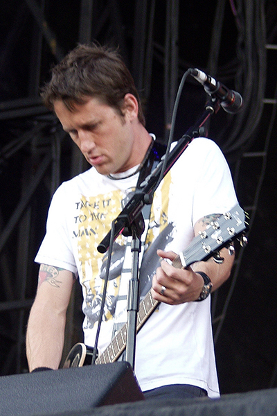
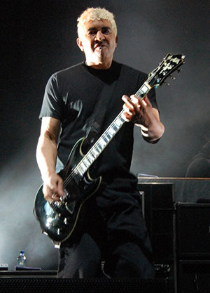
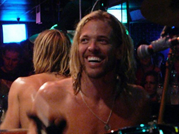

David Eric "Dave" Grohl (born January 14, 1969) is an American rock musician, multi-instrumentalist, singer-songwriter, and producer who is best known as the former drummer for the grunge band Nirvana and the founder and frontman of the rock band Foo Fighters, with which he serves as its main songwriter, lead singer, and rhythm guitarist.
Christopher Aubrey "Chris" Shiflett (born May 6, 1971) is best known as the lead guitarist for the rock band Foo Fighters since 1999, and the punk rock band No Use for a Name, as well as the punk rock cover band Me First and the Gimme Gimmes. He is the younger brother of musician Scott Shiflett.

Georg Albert Ruthenberg (born August 5, 1959), better known as Pat Smear, is an American guitarist. He is best known as a guitarist in the rock band Foo Fighters, with whom he has recorded three studio albums. Smear was also a founding member of the influential punk band Germs, and was the additional live guitarist for the grunge band Nirvana.
Nathan Gregor "Nate" Mendel (born December 2, 1968) is an American bassist for the bands Foo Fighters, The Jealous Sound, Sunny Day Real Estate, and The Fire Theft. In 2015, he announced he is the singer, songwriter and guitarist for his new project, Lieutenant.
Oliver Taylor Hawkins (born February 17, 1972) is an American musician, best known as the drummer of the rock band Foo Fighters. His cousin, Kevin Harrell, introduced him to Dave Grohl after camping with him for several weeks in the Ozarks. Hawkins would eventually become the drummer for Grohl's band, Foo Fighters. He was voted "Best Rock Drummer" in 2005 by the UK drumming magazine Rhythm.